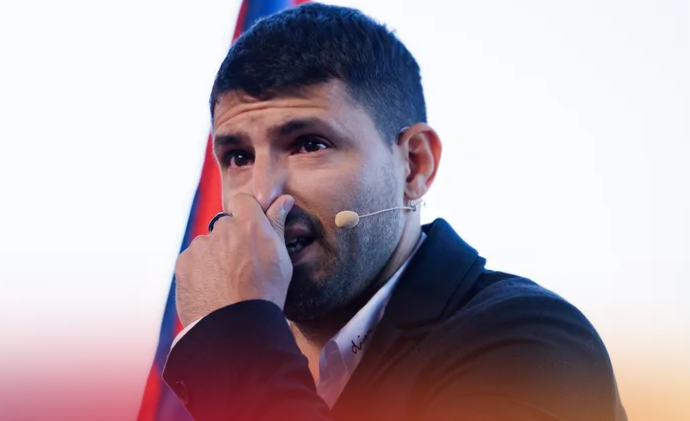

|  |
Con will no longer be playing. The Argentine striker for Barcelona announced, at noon, Wednesday, during a press conference held at the Camp Nou, his retirement. He has authored 436 goals in 802 matches, and scored for Independiente (23 goals), Atletico Madrid (101), Manchester City (260) and Barcelona (1). With the Argentina selection, he scored 9 goals in the lower categories and 42 with a. Winning 21 collective titles, he stopped playing after breaking records for goals with Manchester City in the Premier League: the best foreign scorer in the competition, the best goal average (1 every 108 minutes); And with Argentina (the third highest scorer in Argentine history). |
|---|